Part A: The Power of Diffusion Models
1.0 Setup and Prompt Embeddings
Testing prompts with two different num_inference_steps values.
Inference Steps: Set 1
A stylish hipster barista in a cozy café, pouring latte art, warm tones, candid photography
A high detail photo of a dog, expressive eyes, soft fur texture, natural outdoor setting
An oil painting of people gathered around a campfire at night, glowing firelight, deep shadows, storytelling mood
An oil painting of an elderly man, expressive wrinkles, dramatic lighting, classical portrait style
Inference Steps: Set 2
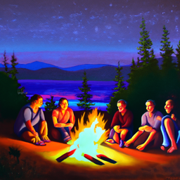
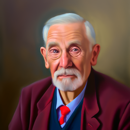
1.1 Forward Process
Campanile image at varying noise levels.
t=250

t=500

t=750

1.2 Classical Denoising
Gaussian blur denoising results on the noisy Campanile images.
t=250 Noisy

Gaussian Denoised

t=500 Noisy

Gaussian Denoised

t=750 Noisy

Gaussian Denoised

1.3 One-Step Denoising
UNet one-step denoising of the Campanile.
Original

Noisy (t=250)
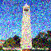
Clean Estimate
Original

Noisy (t=500)
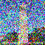
Clean Estimate
Original

Noisy (t=750)
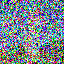
Clean Estimate
1.4 Iterative Denoising
Iterative denoising loop visualization and comparison.
Original

Clean (Iterative)
Clean (1-Step)
Gaussian
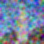
1.5 Diffusion Model Sampling
Sampling from Scratch
Sample 1
Sample 2
Sample 3
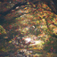
Sample 4
Sample 5
1.6 Classifier-Free Guidance
CFG Sampling from Scratch
Sample 1
Sample 2
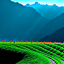
Sample 3
Sample 4
Sample 5
1.7 Image Translation (SDEdit)
1.7.0 Campanile & Own Image Edits (SDEdit)
Translating to the natural manifold.
Campanile
t=1
t=3
t=5
t=7
t=10
t=20
Own Image 1
Original

t=1
t=3
t=5
t=7
t=10
t=20
Own Image 2
Original

t=1
t=3
t=5
t=7
t=10
t=20
1.7.1 Web & Hand-Drawn Image Edits
Web Image Edits
Original
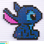
Hand-Drawn Image 1
Original
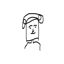
Hand-Drawn Image 2
Original
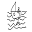
1.7.2 Inpainting
Replacing masked regions with generated content.
Campanile
Original

Mask

Hole to Fill

Preserved
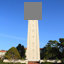
Inpainted
Custom Images
Original
Mask
Inpainted
Original
Mask

Inpainted
1.7.3 Text-Guided Translation
Guiding the SDEdit projection using a text prompt:
"A stylish hipster barista in a cozy café, pouring latte art, warm tones, candid photography"
Campanile
Original

Custom Image 1
Original

Custom Image 2
Original

1.8 Visual Anagrams
Optical illusions created by combining normal and flipped noise estimates.
Anagram 1
Upright: An oil painting of an elderly man, expressive wrinkles, dramatic lighting, classical portrait style
Flipped: An oil painting of people gathered around a campfire at night, glowing firelight, deep shadows, storytelling mood
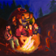
Anagram 2
Upright: A futuristic rocket ship launching into space, dramatic smoke, flames, dynamic angle
Flipped: A realistic pencil illustration of a pencil, fine shading, minimal composition
1.9 Factorized Diffusion (Hybrid Images)
Hybrid images created by combining high frequencies from one noise estimate and low frequencies from another.
--- old_man_campfire hybrid ---
Low-frequency prompt: An oil painting of an elderly man, expressive wrinkles, dramatic lighting, classical portrait style
High-frequency prompt: An oil painting of people gathered around a campfire at night, glowing firelight, deep shadows, storytelling mood
--- skull_waterfalls hybrid ---
Low-frequency prompt: A lithograph of a human skull, scientific illustration, fine etched lines, monochrome
High-frequency prompt: A detailed lithograph of cascading waterfalls, intricate linework, vintage illustration style